My Projects
Here's a list of some of the projects that I've done.
Bolt Action Pen
This is a bolt action pen I made during my senior year of high school and freshman year of college. I made the CAD model and drawings in Onshape. All the parts in the pen were done on manual machines (including the slot!) and I am pretty happy with how it turned out.
Automatic Chopsticks
This is a pair of automatic chopsticks based on the ones by William Osman. I started making them during my first year of high school, but didn't really get it working well untill around my Junior year. They work by using a VL53L0X TOF distance sensor hooked up to a microcontroller. The controller in the pictures is a Teensy, but earlier versions used an ESP32.
Brass Tuning Fork
 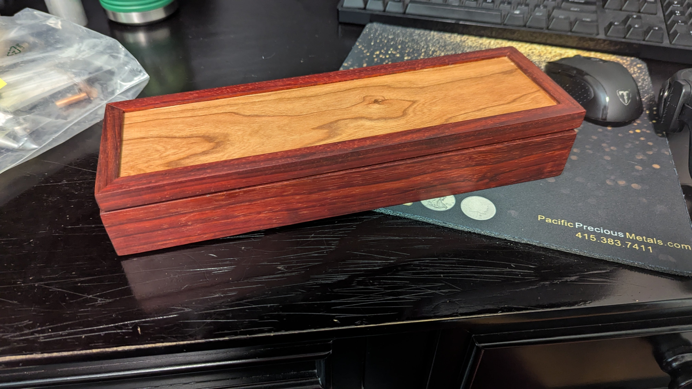
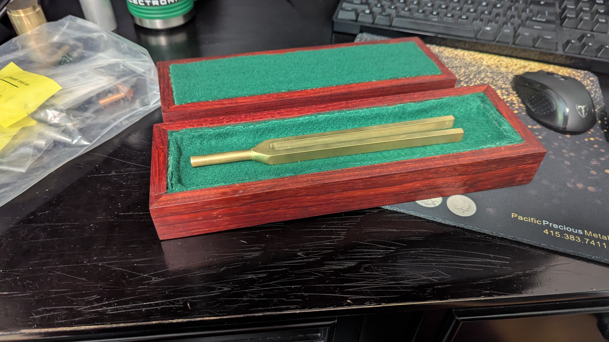
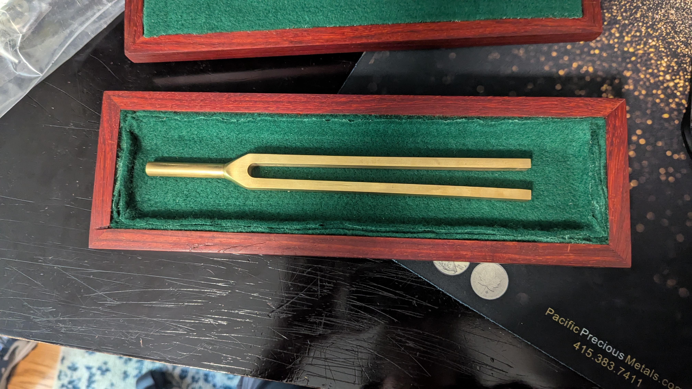
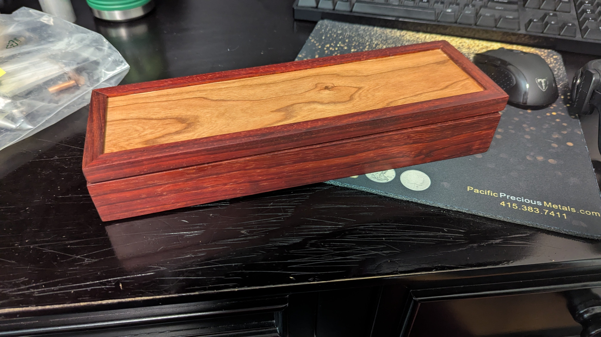
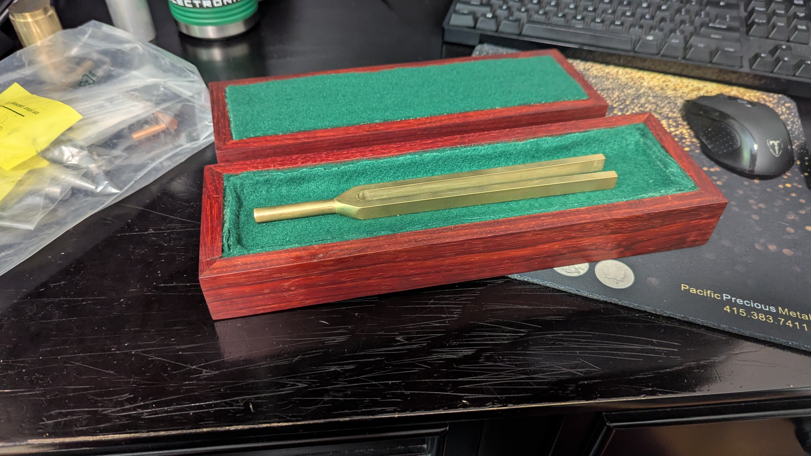
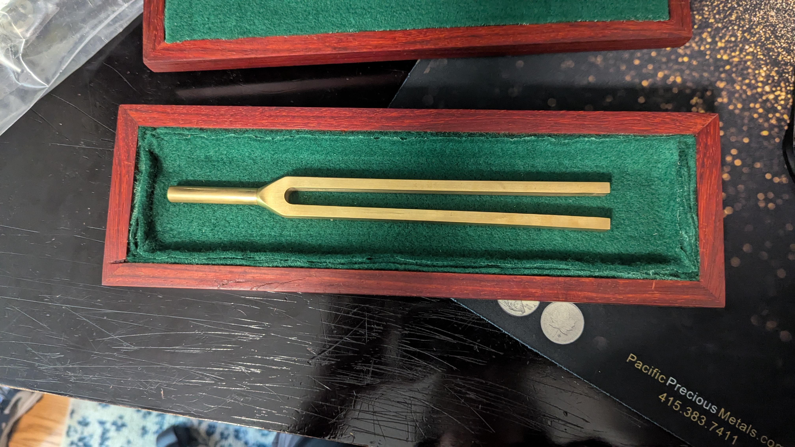
This was a project that I did for Physics class during my senior year of High School. The assignment was to make some sort of musical insturment and figure out the resonant frequency, so I ended up spending over 10 hours machining the fork and making a paduk wood box for it. The handle section was turned on a lathe, and then the forks were made on a mill.
Chain Mount Block
This was a mounting bracket for the elevator for the robot on my high school's FRC team. It connected to the first stage of our 2 stage cascade elevator and was made on a mill.
Stock Storage Canopy
 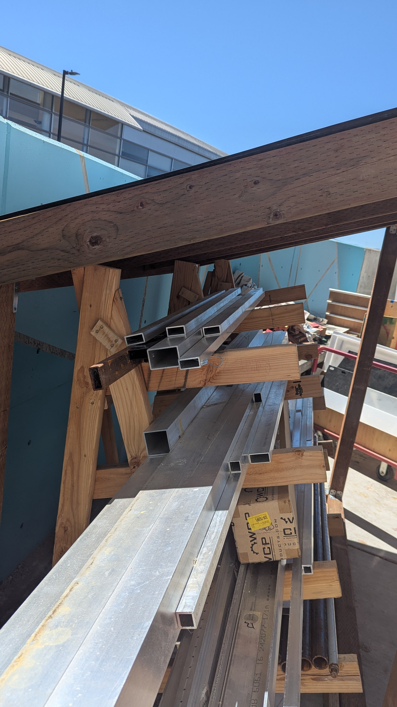
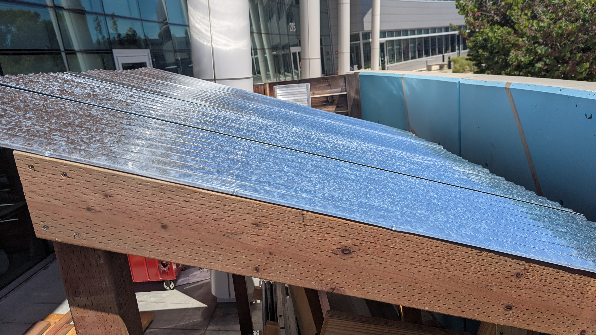
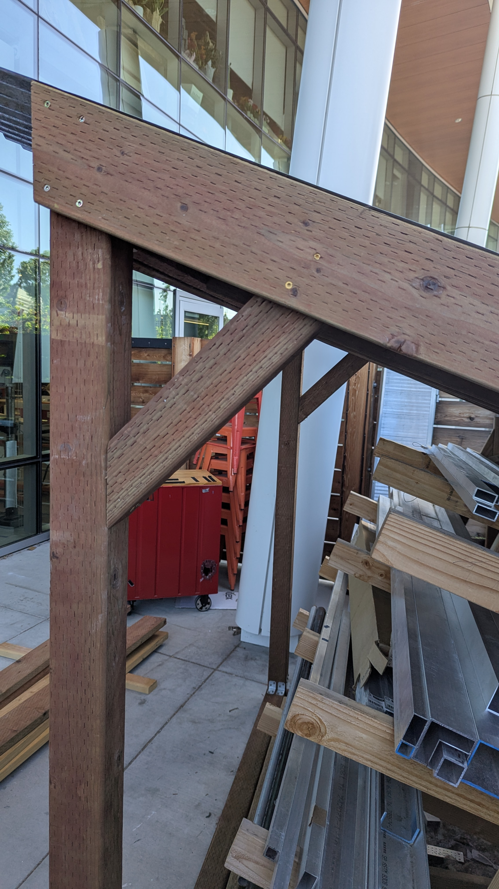
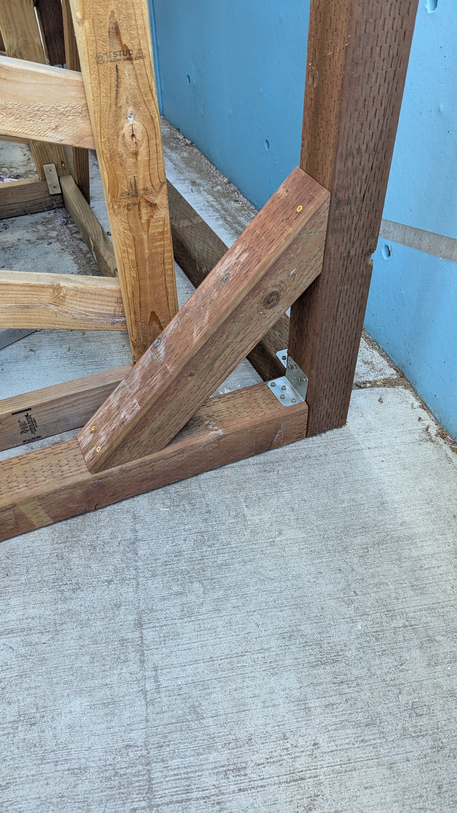
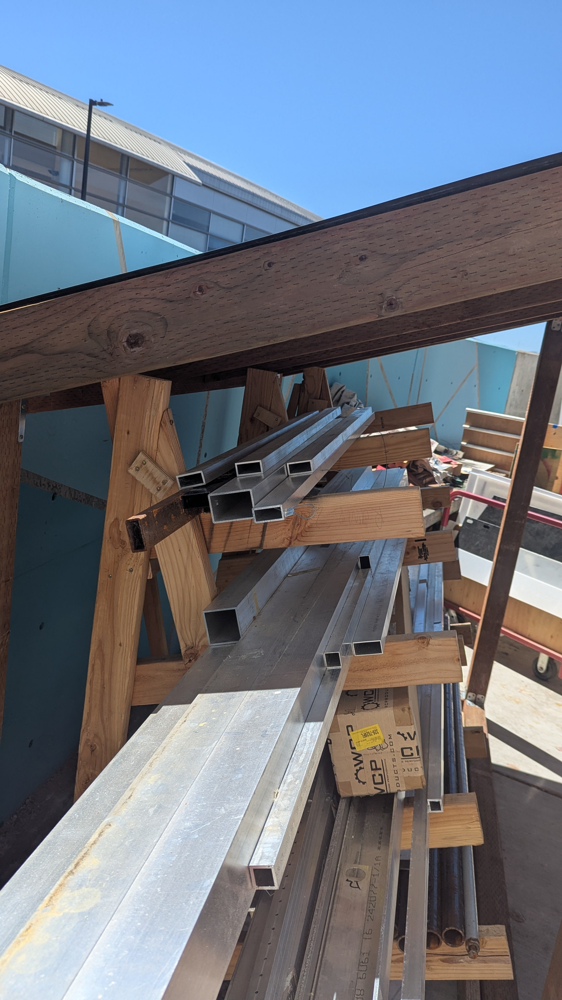
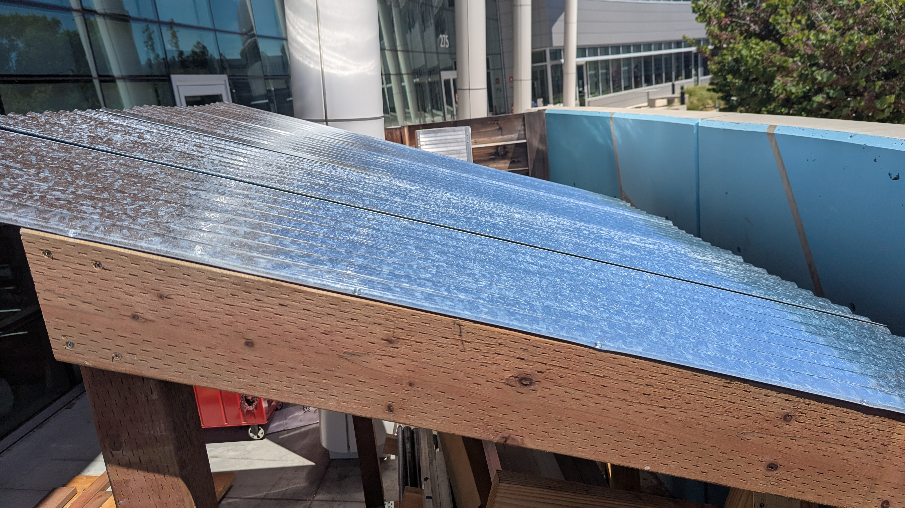
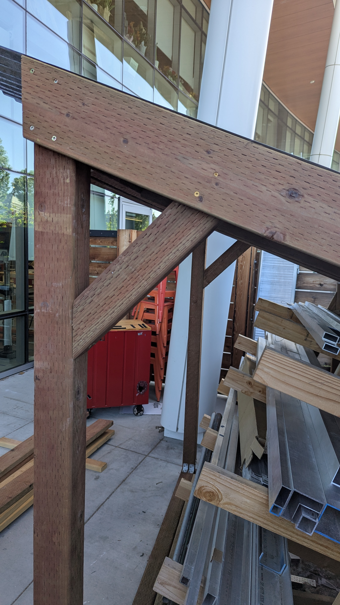
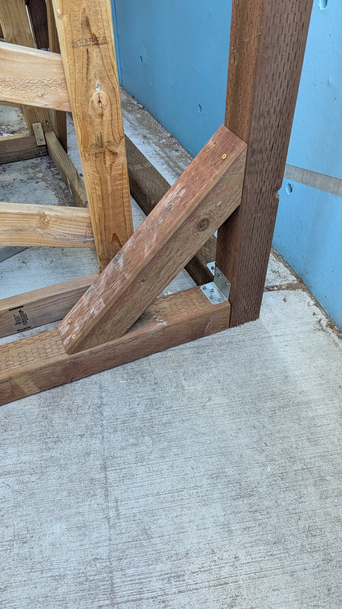
This was the final project in my senior year engineering class in high school. It was a canopy that went over top of the long stock storage rack next to our shop. Before this, there was just a tarp put over top to stop it from getting wet, which was very inconvient whenever we needed something.